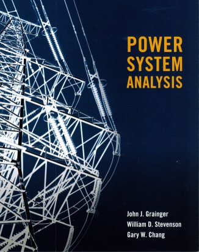
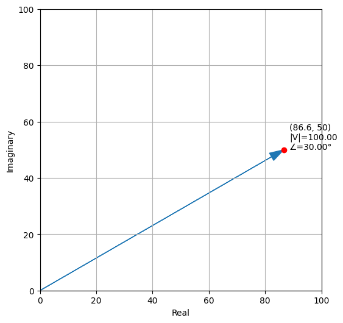
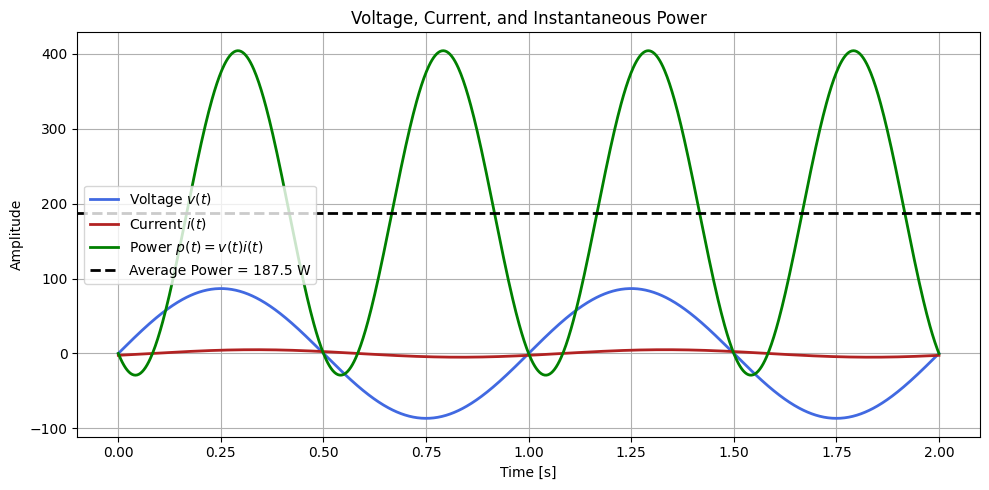
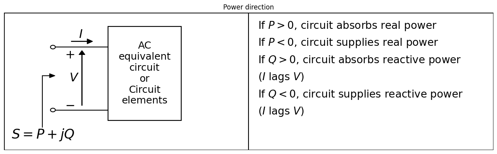
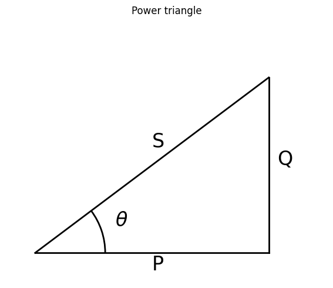
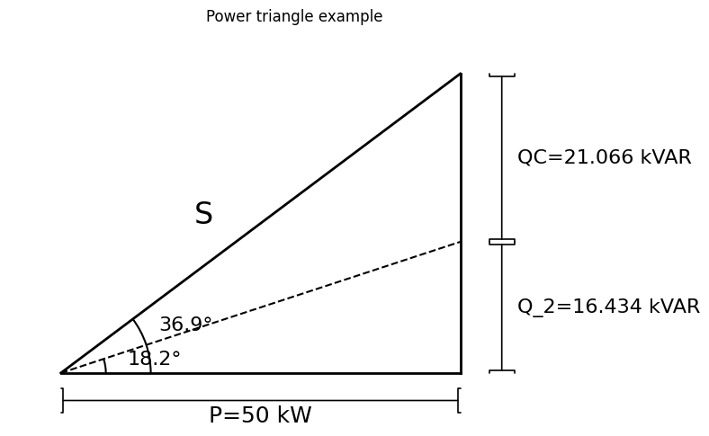

AC Circuits#
Earlier we discussed notation from IEEE and MKS and mentioned that In this book, we use MKS units and IEEE standards as far as possible. Some textbook use different notation. In Power System studies you will ned to get acuustumed to different notation styles, as there is no definite set of notation.
Notation in the textbook Power Systems Analysis by Grainger and Stevenson#

The phasor representations of sinusoidal voltages and currents uses notation of capital letters V and I to indicate phasors (using appropriate subscripts where necessary). To indicate the magnitude of these phasors, Grainger ad Stevenson use V and I enclosed by vertical bars (|V| and |I|) [GS16].
Where a generated voltage, that is, an electromotive force (EMF), is specified, the letter E rather than V is often used for voltage to emphasize the fact that an EMF, rather than a general potential difference between two points, is being considered.
Complex numbers#
A complex number may be represented in rectangular (Cartesian) or polar form (magnitude-angle). These representations are mathematically equivalent and can be converted using already mentioned Euler’s identity \(e^{j\theta} = cos\theta+jsin\theta\)
The impedance \(Z = |Z|\angle \theta\), has a modulus and argument Z = R + jX,
Complex Number: Z = R + jX
Modulus (magnitude): \(|Z| = \sqrt{R^2 + X^2}\)
Argument: \(\theta = tan^{-1}\bigg(\frac{X}{R}\bigg)\)
Python Code:
import matplotlib.pyplot as plt
import numpy as np
x, y = 86.6, 50
mag = np.hypot(x, y)
phase = np.degrees(np.arctan2(y, x))
fig, ax = plt.subplots(figsize=(6, 6))
ax.axhline(0, color='k', lw=0.8)
ax.axvline(0, color='k', lw=0.8)
ax.grid(True)
ax.arrow(0, 0, x, y,length_includes_head=True,head_width=3,head_length=5,color='tab:blue')
ax.plot(x, y, 'ro')
ax.text(x + 2,y, f'({x}, {y})\n|V|={mag:.2f}\n∠={phase:.2f}°')
ax.set_aspect('equal', 'box')
ax.set_xlabel('Real')
ax.set_ylabel('Imaginary')
ax.set_xlim(0, 100)
ax.set_ylim(0, 100)
plt.show()
print(f"Magnitude = {mag:.2f}")
print(f"Phase angle = {phase:.2f}°")

Magnitude = 100.00
Phase angle = 30.00°
If the terminals of the loads are named a and n, and voltage and current are expressed as:
Then the instantaneous power is:

Average Power = 187.49 W

Complex Power#
Calculation of real and reactive by using complex form, we use complex conjugate, \(Z^*\), because multiplying a complex number by its conjugate gives
\begin{equation} zz^*=(a+jb)(a-jb)=a^2+b^2=|z|^2 \end{equation}
where
and
Power triangle#
The power triangle depict the relation of \(\frac{P}{|S|}\) by the cosine to the angle between them, \(\theta\).

EXAMPLE 2.1#
A 50-kW inductive load is operated at a lagging power factor of 0.8. The supply voltage is 220 V at 60 Hz. Determine the size of the required parallel capacitor to improve the overall power factor to 0.95 lagging.
\(P = 50 kw\)
\(PF_{old} = 0.8\)
\(PF_{new} = 0.95\)
Knowing the size of the capacitor, \(Q_c\), we know that:
and
rearrange
Below in Python code:
import numpy as np
#Variables
P = 50*10**3
PF_old = 0.8
PF_new = 0.95
# calc
theta_old = np.degrees(np.arccos(PF_old))
theta_new = np.degrees(np.arccos(PF_new))
print(f"theta_old = {theta_old:.2f} degrees")
print(f"theta_new = {theta_new:.2f} degrees")
Q_c = P * np.tan(np.radians(theta_old)) - P * np.tan(np.radians(theta_new))
print(f"Q_c = {Q_c:.2f} kVAr")
# Given values
V = 220 # Volts
f = 60 # Hz
# Capacitance in Farads
C = Q_c / (2 * np.pi * f * V**2)
# Convert to mF
C_mF = C * 1000
print(f"Capacitance = {C_mF:.4f} mF")
theta_old = 36.87 degrees
theta_new = 18.19 degrees
Q_c = 21065.79 kVAr
Capacitance = 1.1545 mF
